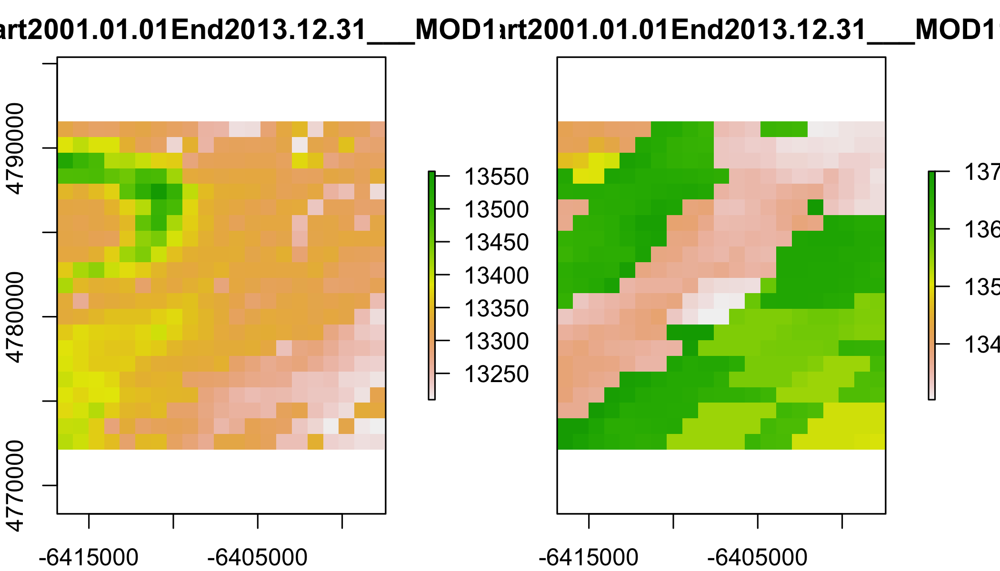
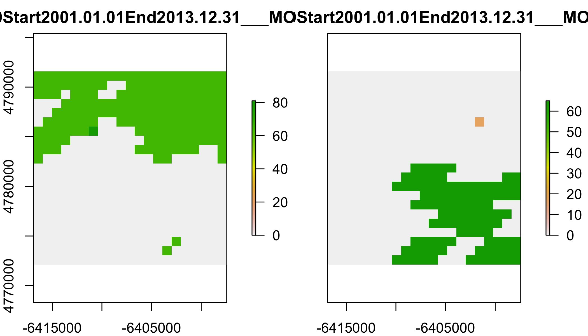
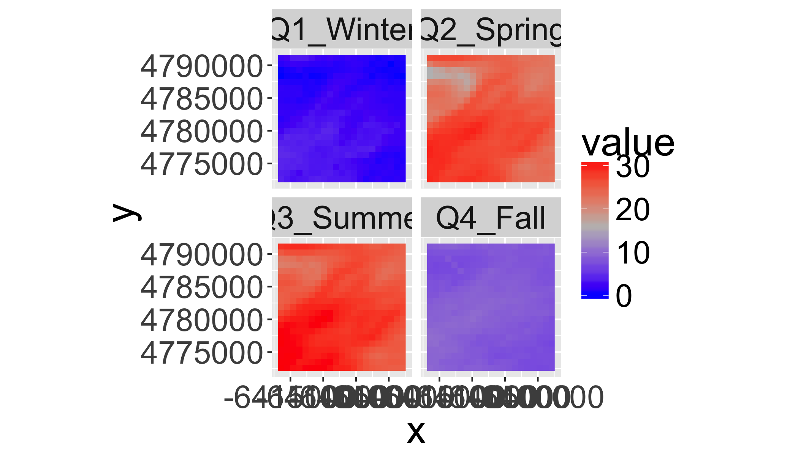
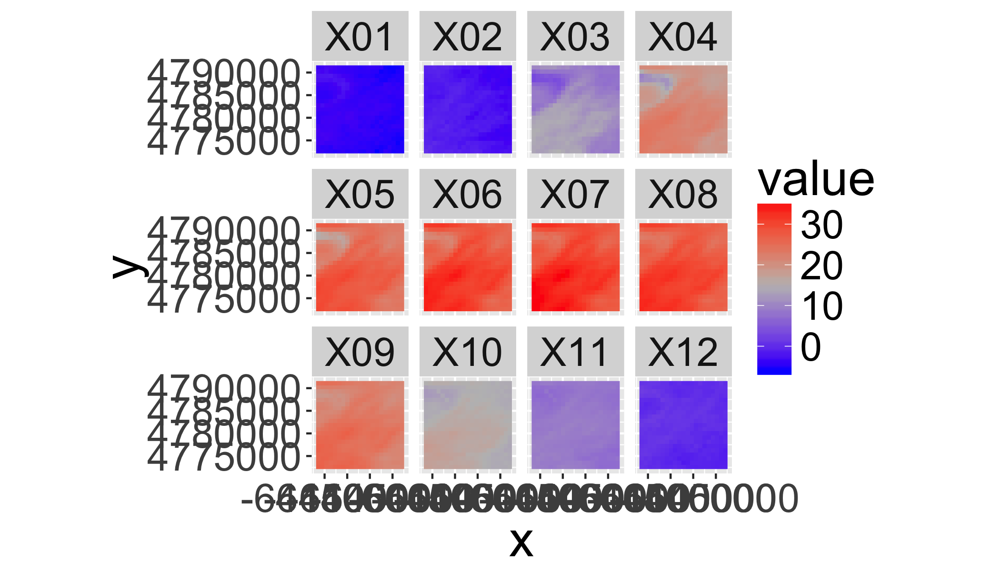
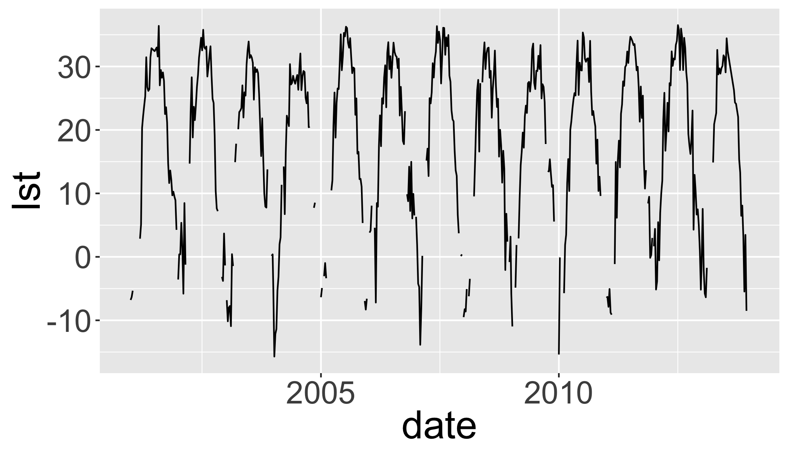
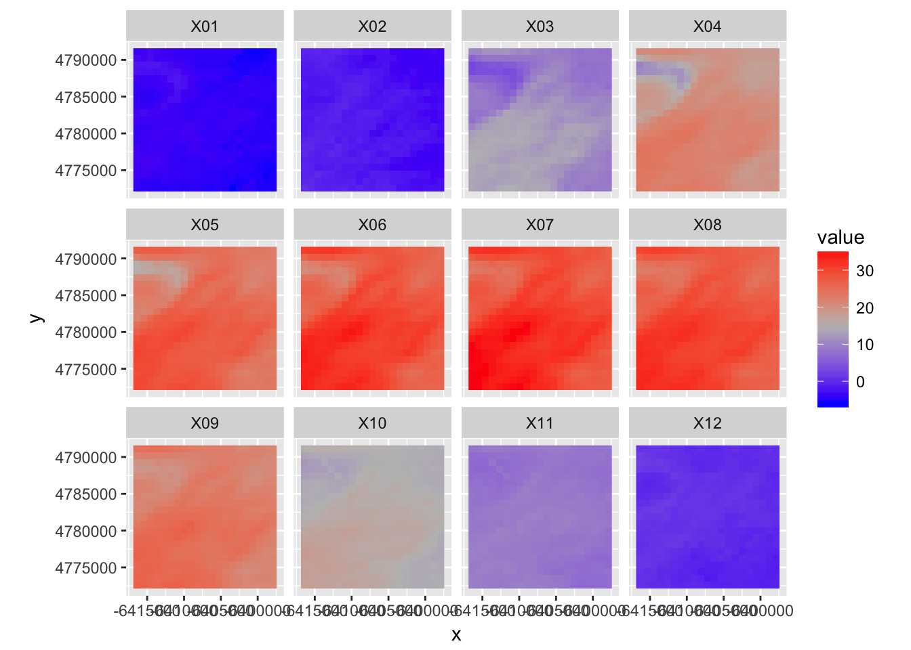
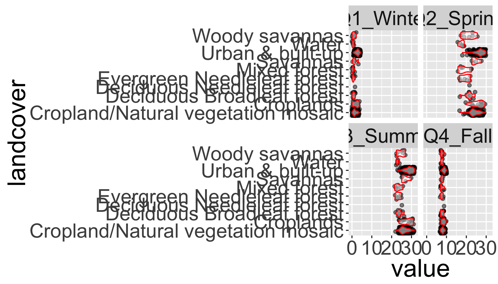

Satellite Remote Sensing
The R Script associated with this page is available here. Download this file and open it (or copy-paste into a new script) with RStudio so you can follow along.
Libraries
library(raster)
library(rasterVis)
library(rgdal)
library(sp)
library(ggplot2)
library(ggmap)
library(dplyr)
library(reshape2)
library(knitr)
library(tidyr)
# New Packages
library(MODISTools)
library(gdalUtils)
library(rts)Specify directory to store data (absolute or relative to current working directory).
download.file("http://adamwilson.us/RDataScience/09_data.zip",
destfile=file.path("09_data.zip"))
datadir="09_data"
unzip("09_data.zip",exdir = datadir)Working with raw HDF files
Will only work if your gdal was compiled with HDF support
gdalinfo(formats = T) %>% grep(pattern="HDF",value=T)## [1] " HDF4 -raster- (ros): Hierarchical Data Format Release 4"
## [2] " HDF4Image -raster- (rw+): HDF4 Dataset"
## [3] " HDF5 -raster- (ros): Hierarchical Data Format Release 5"
## [4] " HDF5Image -raster- (ro): HDF5 Dataset"hdf=file.path(datadir,"MCD12Q1.A2012001.h12v04.051.2014288200441_subset.hdf")Use gdalinfo() to print information about the file.
gdalinfo(hdf)Subdatasets
An important component of the metadata of a HDF file is the list of ‘subdatasets’ that are inside the file. HDF files can hold any number of different datasets and you need to use the specific subdataset
- SUBDATASET_1_NAME=HDF4_EOS:EOS_GRID:"09_data/MCD12Q1.A2012001.h12v04.051.2014288200441_subset.hdf":MOD12Q1:Land_Cover_Type_1
- SUBDATASET_1_DESC=[2400x2400] Land_Cover_Type_1 MOD12Q1 (8-bit unsigned integer)
- SUBDATASET_2_NAME=HDF4_EOS:EOS_GRID:"09_data/MCD12Q1.A2012001.h12v04.051.2014288200441_subset.hdf":MOD12Q1:Land_Cover_Type_1_Assessment
- SUBDATASET_2_DESC=[2400x2400] Land_Cover_Type_1_Assessment MOD12Q1 (8-bit unsigned integer)
- SUBDATASET_3_NAME=HDF4_EOS:EOS_GRID:"09_data/MCD12Q1.A2012001.h12v04.051.2014288200441_subset.hdf":MOD12Q1:Land_Cover_Type_QC.Num_QC_Words_01
- SUBDATASET_3_DESC=[2400x2400] Land_Cover_Type_QC.Num_QC_Words_01 MOD12Q1 (8-bit unsigned integer)
Translate to GEOtif
gdal_translate("HDF4_EOS:EOS_GRID:\"09_data/MCD12Q1.A2012001.h12v04.051.2014288200441_subset.hdf\":MOD12Q1:Land_Cover_Type_1",
"test.tif")
gdalinfo("test.tif",nomd=T)Plot it
d=raster("test.tif")
plot(d)
See also the ModisDownload() function in library(rts):
- Downloads series of MODIS images in a specific timeframe for specified tile(s)
- MODIS Reproject Tool (MRT) software to mosaic, reproject, reformat
Use MODISTools package to access the MODISweb
List MODIS products
GetProducts()## [1] "MCD12Q1" "MCD12Q2" "MCD43A1" "MCD43A2" "MCD43A4"
## [6] "MOD09A1" "MOD11A2" "MOD13Q1" "MOD15A2" "MOD15A2GFS"
## [11] "MOD16A2" "MOD17A2_51" "MOD17A3" "MYD09A1" "MYD11A2"
## [16] "MYD13Q1" "MYD15A2"GetBands(Product = "MCD12Q1")## [1] "LC_Property_1"
## [2] "LC_Property_2"
## [3] "LC_Property_3"
## [4] "Land_Cover_Type_1"
## [5] "Land_Cover_Type_2"
## [6] "Land_Cover_Type_3"
## [7] "Land_Cover_Type_4"
## [8] "Land_Cover_Type_5"
## [9] "Land_Cover_Type_1_Assessment"
## [10] "Land_Cover_Type_2_Assessment"
## [11] "Land_Cover_Type_3_Assessment"
## [12] "Land_Cover_Type_4_Assessment"
## [13] "Land_Cover_Type_5_Assessment"
## [14] "Land_Cover_Type_1_Secondary"
## [15] "Land_Cover_Type_1_Secondary_Percent"Selection locations
loc=rbind.data.frame(
list("UB Spine",43.000753, -78.788195))
colnames(loc)=c("loc","lat","long")
coordinates(loc)=cbind(loc$long,loc$lat)Available dates
mdates=GetDates(Product = "MOD11A2", Lat = loc$lat[1], Long = loc$long[1])MODIS date codes:
.A2006001 - Julian Date of Acquisition (A-YYYYDDD)
Convert to a proper date:
- Drop the “
A” - Specify date format with julian day
[1,365]
td=mdates[1:5]
td## [1] "A2000065" "A2000073" "A2000081" "A2000089" "A2000097"sub() to substitute a character in a vector()
sub("A","",td)## [1] "2000065" "2000073" "2000081" "2000089" "2000097"Check ?strptime for date formats.
%Y4-digit year%j3-digit Julian day
sub("A","",td)%>%
as.Date("%Y%j")## [1] "2000-03-05" "2000-03-13" "2000-03-21" "2000-03-29" "2000-04-06"Add start and end dates to loc object
dates=mdates%>%sub(pattern="A",replacement="")%>%as.Date("%Y%j")
loc$start.date <- min(as.numeric(format(dates,"%Y")))
loc$end.date <- max(as.numeric(format(dates,"%Y")))Identify (and create) download folders
Today we’ll work with:
- Land Surface Temperature (
lst): MOD11A2 - Land Cover (
lc): MCD12Q1
lstdir=file.path(datadir,"lst")
if(!file.exists(lstdir)) dir.create(lstdir)
lcdir=file.path(datadir,"lc")
if(!file.exists(lcdir)) dir.create(lcdir)Download subset
Size whole km (integers) for each direction.
Size=c(1,1) for 250m resolution data will return a 9x9 pixel tile for each location, centred on the input coordinate.
Size=c(0,0) only the central pixel.
Maximum size tile Size=c(100,100)
This can take a few minutes to run, so you can use the file provided in the data folder.
Get Land Surface Temperature Data
MODISSubsets(LoadDat = loc,
Products = c("MOD11A2"),
Bands = c( "LST_Day_1km", "QC_Day"),
Size = c(10,10),
SaveDir=lstdir,
StartDate=T)Get LULC
MODISSubsets(LoadDat = loc,
Products = c("MCD12Q1"),
Bands = c( "Land_Cover_Type_1"),
Size = c(10,10),
SaveDir=lcdir,
StartDate=T)List available files:
lst_files=list.files(lstdir,pattern="Lat.*asc",full=T)
head(lst_files)## [1] "09_data/lst/Lat43.00075Lon-78.78820Start2001-01-01End2013-12-31___MOD11A2.asc"Output:
- 1 file per location in
loc - Rows: time-steps
- Columns: data bands
lst_subset <- read.csv(lst_files[1],header = FALSE, as.is = TRUE)
dim(lst_subset)## [1] 1180 451lst_subset[1:5,1:15]## V1 V2 V3 V4 V5
## 1 21 21 -6416881 4772121 926.6254
## 2 21 21 -6416881 4772121 926.6254
## 3 21 21 -6416881 4772121 926.6254
## 4 21 21 -6416881 4772121 926.6254
## 5 21 21 -6416881 4772121 926.6254
## V6 V7 V8
## 1 MOD11A2.A2001001.h12v04.005.2006350190920.LST_Day_1km MOD11A2 A2001001
## 2 MOD11A2.A2001009.h12v04.005.2006352085909.LST_Day_1km MOD11A2 A2001009
## 3 MOD11A2.A2001017.h12v04.005.2006354035616.LST_Day_1km MOD11A2 A2001017
## 4 MOD11A2.A2001025.h12v04.005.2006355204922.LST_Day_1km MOD11A2 A2001025
## 5 MOD11A2.A2001033.h12v04.005.2006357090922.LST_Day_1km MOD11A2 A2001033
## V9 V10 V11 V12 V13
## 1 Lat43.000753Lon-78.788195Samp21Line21 2.006350e+12 13321 13306 13296
## 2 Lat43.000753Lon-78.788195Samp21Line21 2.006352e+12 13417 13407 13409
## 3 Lat43.000753Lon-78.788195Samp21Line21 2.006354e+12 13388 13373 13395
## 4 Lat43.000753Lon-78.788195Samp21Line21 2.006355e+12 0 0 0
## 5 Lat43.000753Lon-78.788195Samp21Line21 2.006357e+12 13662 0 0
## V14 V15
## 1 13297 13314
## 2 13400 13396
## 3 13403 13400
## 4 0 0
## 5 0 0Convert to ASCII Grid raster files
Use MODISGrid() to convert to separate ASCII Grid format files:
NCOLS xxx
NROWS xxx
XLLCENTER xxx | XLLCORNER xxx
YLLCENTER xxx | YLLCORNER xxx
CELLSIZE xxx
NODATA_VALUE xxx
row 1
row 2
...
row nConvert LST Data
MODISGrid(Dir = lstdir,
DirName = "modgrid",
SubDir = TRUE,
NoDataValues=
list("MOD11A2" = c("LST_Day_1km" = 0,
"QC_Day" = -1)))Convert LandCover Data
MODISGrid(Dir = lcdir,
DirName = "modgrid",
SubDir = TRUE,
NoDataValues=
list("MCD12Q1" = c("Land_Cover_Type_1" = 255)))Get lists of .asc files
lst_files=list.files(file.path(lstdir,"modgrid"),recursive=T,
pattern="LST_Day.*asc",full=T)
head(lst_files)## [1] "09_data/lst/modgrid/Lat43.00075Lon-78.78820Start2001-01-01End2013-12-31___MOD11A2/GRID_Lat43.00075Lon-78.78820Start2001-01-01End2013-12-31___MOD11A2_LST_Day_1km_A2001001.asc"
## [2] "09_data/lst/modgrid/Lat43.00075Lon-78.78820Start2001-01-01End2013-12-31___MOD11A2/GRID_Lat43.00075Lon-78.78820Start2001-01-01End2013-12-31___MOD11A2_LST_Day_1km_A2001009.asc"
## [3] "09_data/lst/modgrid/Lat43.00075Lon-78.78820Start2001-01-01End2013-12-31___MOD11A2/GRID_Lat43.00075Lon-78.78820Start2001-01-01End2013-12-31___MOD11A2_LST_Day_1km_A2001017.asc"
## [4] "09_data/lst/modgrid/Lat43.00075Lon-78.78820Start2001-01-01End2013-12-31___MOD11A2/GRID_Lat43.00075Lon-78.78820Start2001-01-01End2013-12-31___MOD11A2_LST_Day_1km_A2001025.asc"
## [5] "09_data/lst/modgrid/Lat43.00075Lon-78.78820Start2001-01-01End2013-12-31___MOD11A2/GRID_Lat43.00075Lon-78.78820Start2001-01-01End2013-12-31___MOD11A2_LST_Day_1km_A2001033.asc"
## [6] "09_data/lst/modgrid/Lat43.00075Lon-78.78820Start2001-01-01End2013-12-31___MOD11A2/GRID_Lat43.00075Lon-78.78820Start2001-01-01End2013-12-31___MOD11A2_LST_Day_1km_A2001041.asc"lstqc_files=list.files(file.path(lstdir,"modgrid"),recursive=T,
pattern="QC_Day.*asc",full=T)Create raster stacks of evi and evi qc data
lst=stack(lst_files)
plot(lst[[1:2]])
MODLAND Quality control
See a detailed explaination here. Some code below from Steven Mosher’s blog.
MOD11A2 (Land Surface Temperature) Quality Control
lstqc=stack(lstqc_files)
plot(lstqc[[1:2]])
LST QC data
QC data are encoded in 8-bit ‘words’ to compress information.
values(lstqc[[1:2]])%>%table()## .
## 0 17 65 81
## 625 1 255 1
intToBits(65)## [1] 01 00 00 00 00 00 01 00 00 00 00 00 00 00 00 00 00 00 00 00 00 00 00
## [24] 00 00 00 00 00 00 00 00 00intToBits(65)[1:8]## [1] 01 00 00 00 00 00 01 00as.integer(intToBits(65)[1:8])## [1] 1 0 0 0 0 0 1 0MODIS QC data are Big Endian
| Format | Digits | value | sum |
|---|---|---|---|
| Little Endian | 1 0 0 0 0 0 1 0 | 65 | 2^0 + 2^6 |
| Big Endian | 0 1 0 0 0 0 0 1 | 65 | 2^6 + 2^0 |
Reverse the digits with rev() and compare with QC table above.
rev(as.integer(intToBits(65)[1:8]))## [1] 0 1 0 0 0 0 0 1QC for value 65:
- LST produced, other quality, recommend exampination of more detailed QA
- good data quality of L1B in 7 TIR bands
- average emissivity error <= 0.01
- Average LST error <= 2K
Your turn
What does a QC value of 81 represent?
rev(as.integer(intToBits(81)[1:8]))## [1] 0 1 0 1 0 0 0 1# LST produced, other quality, recommend exampination of more detailed QA
# Other quality data
# Average emissivity error <= 0.01
# Average LST error <= 2KFilter the the lst data using the QC data
## set up data frame to hold all combinations
QC_Data <- data.frame(Integer_Value = 0:255,
Bit7 = NA, Bit6 = NA, Bit5 = NA, Bit4 = NA,
Bit3 = NA, Bit2 = NA, Bit1 = NA, Bit0 = NA,
QA_word1 = NA, QA_word2 = NA, QA_word3 = NA,
QA_word4 = NA)
##
for(i in QC_Data$Integer_Value){
AsInt <- as.integer(intToBits(i)[1:8])
QC_Data[i+1,2:9]<- AsInt[8:1]
}
QC_Data$QA_word1[QC_Data$Bit1 == 0 & QC_Data$Bit0==0] <- "LST GOOD"
QC_Data$QA_word1[QC_Data$Bit1 == 0 & QC_Data$Bit0==1] <- "LST Produced,Other Quality"
QC_Data$QA_word1[QC_Data$Bit1 == 1 & QC_Data$Bit0==0] <- "No Pixel,clouds"
QC_Data$QA_word1[QC_Data$Bit1 == 1 & QC_Data$Bit0==1] <- "No Pixel, Other QA"
QC_Data$QA_word2[QC_Data$Bit3 == 0 & QC_Data$Bit2==0] <- "Good Data"
QC_Data$QA_word2[QC_Data$Bit3 == 0 & QC_Data$Bit2==1] <- "Other Quality"
QC_Data$QA_word2[QC_Data$Bit3 == 1 & QC_Data$Bit2==0] <- "TBD"
QC_Data$QA_word2[QC_Data$Bit3 == 1 & QC_Data$Bit2==1] <- "TBD"
QC_Data$QA_word3[QC_Data$Bit5 == 0 & QC_Data$Bit4==0] <- "Emiss Error <= .01"
QC_Data$QA_word3[QC_Data$Bit5 == 0 & QC_Data$Bit4==1] <- "Emiss Err >.01 <=.02"
QC_Data$QA_word3[QC_Data$Bit5 == 1 & QC_Data$Bit4==0] <- "Emiss Err >.02 <=.04"
QC_Data$QA_word3[QC_Data$Bit5 == 1 & QC_Data$Bit4==1] <- "Emiss Err > .04"
QC_Data$QA_word4[QC_Data$Bit7 == 0 & QC_Data$Bit6==0] <- "LST Err <= 1"
QC_Data$QA_word4[QC_Data$Bit7 == 0 & QC_Data$Bit6==1] <- "LST Err > 2 LST Err <= 3"
QC_Data$QA_word4[QC_Data$Bit7 == 1 & QC_Data$Bit6==0] <- "LST Err > 1 LST Err <= 2"
QC_Data$QA_word4[QC_Data$Bit7 == 1 & QC_Data$Bit6==1] <- "LST Err > 4"
kable(head(QC_Data))| Integer_Value | Bit7 | Bit6 | Bit5 | Bit4 | Bit3 | Bit2 | Bit1 | Bit0 | QA_word1 | QA_word2 | QA_word3 | QA_word4 |
|---|---|---|---|---|---|---|---|---|---|---|---|---|
| 0 | 0 | 0 | 0 | 0 | 0 | 0 | 0 | 0 | LST GOOD | Good Data | Emiss Error <= .01 | LST Err <= 1 |
| 1 | 0 | 0 | 0 | 0 | 0 | 0 | 0 | 1 | LST Produced,Other Quality | Good Data | Emiss Error <= .01 | LST Err <= 1 |
| 2 | 0 | 0 | 0 | 0 | 0 | 0 | 1 | 0 | No Pixel,clouds | Good Data | Emiss Error <= .01 | LST Err <= 1 |
| 3 | 0 | 0 | 0 | 0 | 0 | 0 | 1 | 1 | No Pixel, Other QA | Good Data | Emiss Error <= .01 | LST Err <= 1 |
| 4 | 0 | 0 | 0 | 0 | 0 | 1 | 0 | 0 | LST GOOD | Other Quality | Emiss Error <= .01 | LST Err <= 1 |
| 5 | 0 | 0 | 0 | 0 | 0 | 1 | 0 | 1 | LST Produced,Other Quality | Other Quality | Emiss Error <= .01 | LST Err <= 1 |
Select which QC Levels to keep
keep=QC_Data[QC_Data$Bit1 == 0,]
keepvals=unique(keep$Integer_Value)
keepvals## [1] 0 1 4 5 8 9 12 13 16 17 20 21 24 25 28 29 32
## [18] 33 36 37 40 41 44 45 48 49 52 53 56 57 60 61 64 65
## [35] 68 69 72 73 76 77 80 81 84 85 88 89 92 93 96 97 100
## [52] 101 104 105 108 109 112 113 116 117 120 121 124 125 128 129 132 133
## [69] 136 137 140 141 144 145 148 149 152 153 156 157 160 161 164 165 168
## [86] 169 172 173 176 177 180 181 184 185 188 189 192 193 196 197 200 201
## [103] 204 205 208 209 212 213 216 217 220 221 224 225 228 229 232 233 236
## [120] 237 240 241 244 245 248 249 252 253How many observations will be dropped?
qcvals=table(values(lstqc)) # this takes a minute or two
QC_Data%>%
dplyr::select(everything(),-contains("Bit"))%>%
mutate(Var1=as.character(Integer_Value),
keep=Integer_Value%in%keepvals)%>%
inner_join(data.frame(qcvals))%>%
kable()## Joining, by = "Var1"| Integer_Value | QA_word1 | QA_word2 | QA_word3 | QA_word4 | Var1 | keep | Freq |
|---|---|---|---|---|---|---|---|
| 0 | LST GOOD | Good Data | Emiss Error <= .01 | LST Err <= 1 | 0 | TRUE | 62819 |
| 2 | No Pixel,clouds | Good Data | Emiss Error <= .01 | LST Err <= 1 | 2 | FALSE | 30750 |
| 17 | LST Produced,Other Quality | Good Data | Emiss Err >.01 <=.02 | LST Err <= 1 | 17 | TRUE | 11244 |
| 65 | LST Produced,Other Quality | Good Data | Emiss Error <= .01 | LST Err > 2 LST Err <= 3 | 65 | TRUE | 47211 |
| 81 | LST Produced,Other Quality | Good Data | Emiss Err >.01 <=.02 | LST Err > 2 LST Err <= 3 | 81 | TRUE | 99852 |
| 129 | LST Produced,Other Quality | Good Data | Emiss Error <= .01 | LST Err > 1 LST Err <= 2 | 129 | TRUE | 8 |
| 145 | LST Produced,Other Quality | Good Data | Emiss Err >.01 <=.02 | LST Err > 1 LST Err <= 2 | 145 | TRUE | 8306 |
Do you want to update the values you are keeping?
Filter the LST Data keeping only keepvals
These steps take a couple minutes.
Make logical flag to use for mask
lstkeep=calc(lstqc,function(x) x%in%keepvals)Plot the mask
gplot(lstkeep[[4:8]])+
geom_raster(aes(fill=as.factor(value)))+
facet_grid(variable~.)+
scale_fill_manual(values=c("blue","red"),name="Keep")+
coord_equal()+
theme(legend.position = "bottom")
Mask the lst data using the QC data
lst2=mask(lst,mask=lstkeep,maskval=0)Add Dates to Z dimension
tdates=names(lst)%>%
sub(pattern=".*_A",replacement="")%>%
as.Date("%Y%j")
names(lst2)=1:nlayers(lst2)
lst2=setZ(lst2,tdates)Summarize to Seasonal climatologies
Use stackApply() with a seasonal index.
tseas=as.numeric(sub("Q","",quarters(getZ(lst2))))
tseas[1:20]## [1] 1 1 1 1 1 1 1 1 1 1 1 1 2 2 2 2 2 2 2 2lst_seas=stackApply(lst2,
indices = tseas,
mean,na.rm=T)
names(lst_seas)=c("Q1_Winter",
"Q2_Spring",
"Q3_Summer",
"Q4_Fall")gplot(lst_seas)+geom_raster(aes(fill=value))+
facet_wrap(~variable)+
scale_fill_gradientn(colours=c("blue",mid="grey","red"))+
coord_equal()+
theme(axis.text.x=element_text(angle=60, hjust=1))
Your turn
Use stackApply() to generate and plot monthly median lst values.
tmonth=as.numeric(format(getZ(lst2),"%m"))
lst_month=stackApply(lst2,indices = tmonth,mean,na.rm=T)
names(lst_month)=sprintf("%02d",1:12)
gplot(lst_month)+geom_raster(aes(fill=value))+
facet_wrap(~variable)+
scale_fill_gradientn(colours=c("blue",mid="grey","red"))+
coord_equal()
Extract timeseries for a point
lw=SpatialPoints(
data.frame(
x= -78.791547,
y=43.007211))
projection(lw)="+proj=longlat"
lw=spTransform(lw,projection(lst2))
lwt=data.frame(date=getZ(lst2),
lst=t(raster::extract(
lst2,lw,
buffer=1000,
fun=mean,na.rm=T)))
ggplot(lwt,aes(x=date,y=lst))+
geom_path()
See the library(rts) for more timeseries related functions.
Process landcover data
lc_files=list.files(
file.path(lcdir,"modgrid"),
recursive=T,
pattern="Land_Cover_Type_1.*asc",
full=T)
lc=raster(lc_files[1])Get cover clases from MODIS website
Land_Cover_Type_1 = c(
Water = 0,
`Evergreen Needleleaf forest` = 1,
`Evergreen Broadleaf forest` = 2,
`Deciduous Needleleaf forest` = 3,
`Deciduous Broadleaf forest` = 4,
`Mixed forest` = 5,
`Closed shrublands` = 6,
`Open shrublands` = 7,
`Woody savannas` = 8,
Savannas = 9,
Grasslands = 10,
`Permanent wetlands` = 11,
Croplands = 12,
`Urban & built-up` = 13,
`Cropland/Natural vegetation mosaic` = 14,
`Snow & ice` = 15,
`Barren/Sparsely vegetated` = 16,
Unclassified = 254,
NoDataFill = 255)Convert to factor raster
lc=as.factor(lc)
lcd=data.frame(
ID=Land_Cover_Type_1,
landcover=names(Land_Cover_Type_1))
levels(lc)=lcd## Warning in .checkLevels(levels(x)[[1]], value): the number of rows in the
## raster attributes (factors) data.frame is unexpected## Warning in sort(newv[, 1]) == sort(old[, 1]): longer object length is not a
## multiple of shorter object length## Warning in .checkLevels(levels(x)[[1]], value): the values in the "ID"
## column in the raster attributes (factors) data.frame have changedWarnings about .checkLevels() OK here because some factors not present in this subset…
Resample lc to lst grid
lc2=resample(lc,
lst,
method="ngb")
par(mfrow=c(1,2))
plot(lc)
plot(lc2)
par(mfrow=c(1,1))Summarize mean monthly temperatures by Landcover
table(values(lc))##
## 0 1 3 4 5 6 8 9 10 11 12 13 14
## 17 21 2 53 14 2 43 6 1 8 72 787 655Extract values from lst and lc rasters.
lcds1=cbind.data.frame(
values(lst_seas),
ID=values(lc2))
head(lcds1)## Q1_Winter Q2_Spring Q3_Summer Q4_Fall ID
## 1 1.862969 26.51290 28.61344 8.280000 13
## 2 2.285000 26.81950 28.91517 8.512222 13
## 3 3.223058 26.97719 29.24360 8.779913 13
## 4 3.279153 26.89791 29.13267 8.881607 13
## 5 3.187759 26.97777 29.10033 8.986842 13
## 6 2.644872 26.87336 28.72423 8.636271 13Melt table and add LandCover Name
lcds2=lcds1%>%
melt(id.vars="ID",
variable.name = "season",
value.var="value")%>%
mutate(ID=as.numeric(ID))%>%
left_join(lcd)## Joining, by = "ID"head(lcds2)## ID season value landcover
## 1 13 Q1_Winter 1.862969 Urban & built-up
## 2 13 Q1_Winter 2.285000 Urban & built-up
## 3 13 Q1_Winter 3.223058 Urban & built-up
## 4 13 Q1_Winter 3.279153 Urban & built-up
## 5 13 Q1_Winter 3.187759 Urban & built-up
## 6 13 Q1_Winter 2.644872 Urban & built-upExplore LST distributions by landcover
ggplot(lcds2,aes(y=value,x=landcover,group=landcover))+
facet_wrap(~season)+
geom_point(alpha=.5,position="jitter")+
geom_violin(alpha=.5,col="red",scale = "width")+
theme(axis.text.x=element_text(angle=90, hjust=1))
Use Zonal Statistics to calculate summaries
lct.mean=zonal(lst_seas,
lc2,
'mean',na.rm=T)%>%
data.frame()
lct.sd=zonal(lst_seas,
lc2,
'sd',na.rm=T)%>%
data.frame()
lct.count=zonal(lst_seas,
lc2,
'count',na.rm=T)%>%
data.frame()
lct.summary=rbind(data.frame(lct.mean,var="mean"),
data.frame(lct.sd,var="sd"),
data.frame(lct.count,var="count"))Summarize seasonal values
lctl=melt(lct.summary,
id.var=c("zone","var"),
value="lst")
lctl$season=factor(lctl$variable,
labels=c("Winter","Spring","Summer","Fall"),
ordered=T)
lctl$lc=levels(lc)[[1]][lctl$zone+1,"landcover"]
lctl=dcast(lctl,zone+season+lc~var,value="value")
head(lctl)%>%kable()| zone | season | lc | mean | sd | count |
|---|---|---|---|---|---|
| 0 | Winter | Water | 0.5153696 | 0.3662726 | 5 |
| 0 | Spring | Water | 17.5434186 | 1.2999543 | 5 |
| 0 | Summer | Water | 22.9897867 | 0.6123666 | 5 |
| 0 | Fall | Water | 7.7698341 | 0.5391288 | 5 |
| 1 | Winter | Evergreen Needleleaf forest | 0.7437689 | 0.5203108 | 6 |
| 1 | Spring | Evergreen Needleleaf forest | 19.4351263 | 2.3721006 | 6 |
Build summary table
filter(lctl,count>=100)%>%
mutate(txt=paste0(round(mean,2),
" (±",round(sd,2),")"))%>%
dcast(lc+count~season,
value.var="txt")%>%
kable()| lc | count | Winter | Spring | Summer | Fall |
|---|---|---|---|---|---|
| Cropland/Natural vegetation mosaic | 185 | 1.55 (±0.88) | 24.39 (±2) | 26.48 (±1.82) | 8.1 (±0.62) |
| Urban & built-up | 200 | 2.71 (±0.83) | 26.69 (±2.1) | 28.74 (±1.82) | 8.77 (±0.62) |
Your turn
Calculate the maximum observed seasonal average lst in each land cover type.
zonal(max(lst_seas),lc2,'max',na.rm=T)%>%
data.frame()%>%
left_join(levels(lc)[[1]],
by=c("zone"="ID"))%>%
arrange(desc(max))%>%
kable()| zone | max | landcover |
|---|---|---|
| 13 | 31.63883 | Urban & built-up |
| 14 | 31.36159 | Cropland/Natural vegetation mosaic |
| 12 | 31.04633 | Croplands |
| 9 | 29.84034 | Savannas |
| 8 | 26.87503 | Woody savannas |
| 4 | 26.23543 | Deciduous Broadleaf forest |
| 5 | 25.68387 | Mixed forest |
| 3 | 25.15752 | Deciduous Needleleaf forest |
| 1 | 24.88800 | Evergreen Needleleaf forest |
| 0 | 23.94775 | Water |
Things to think about:
- What tests would you use to identify differences?
- Do you need to worry about unequal sample sizes?